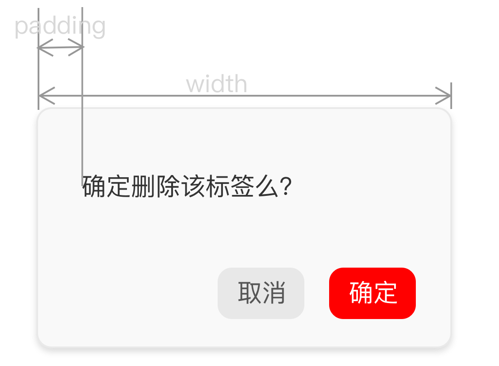

第2节：巧用box-sizing
首先要了解盒子模型，盒子模型分为标准盒子模型和怪异盒子模型：
标准盒子模型： width = content
怪异盒子模型： width = content + padding + border
在一些低版本的 IE 浏览器展示的是怪异盒子模型，为了编写 CSS 逻辑的统一，需要避免IE 触发怪异盒模型：使用<!DOCTYPE html>声明，告诉IE采用W3C盒子模型。
但是在一些情况下，使用 box-sizing 可以更好的帮助我们计算盒子的宽度。
首先了解 box-sizing 的属性：
Content-box: 即标准盒模型 width = content
Border-box : 即IE盒模型 width = content + padding + border
Inherit: 继承父元素的 box-sizing 属性
当 UI 给我们的设计稿有类似这样的模型：
我们其实不好计算/测量 content 的宽度，此时将 box-sizing:border-box,然后：

这样我们并不用计算 content 就可以还原设计稿了，比较方便。
不过要注意 box-sizing 并不支持 IE6，IE7(其实感觉这一句是废话)，在需要兼容 IE6/7 的情况并不可以使用啦
我在搜索的过程中发现 box-sizing: border-box 比想象中的好用，但是为什么在我平时编写代码的过程中很少使用 border-box 呢？知乎有问题：为什么「box-sizing:border-box」没有被广泛采用？总结起来就是：
- 开发者不知道
- 兼容性差（回答时间大多是 13-14年，表示对 IE6/7的兼容性提出的疑问）
- Box-sizing:border-box 大多数场景可以使用 calc() 替代，而 calc() 有很多不能用 border-box 替代
针对1：我认为大多数开发者是知道的，但是不知道为什么不使用。
针对2: 现在都 9102 年了，除了一些特殊为特殊机关单位写的网站我认为可以不用考虑 IE6/7 的兼容了。
针对3: 我没有想到上面我描述的场景有什么方式可以使用 calc() 替代，并且 calc() 的兼容性比 box-sizing 差很多。使用 calc() 还是 box-sizing 大家可以自行判断。
但是并不推荐在全站 css-reset 的时候添加。box-sizing:border-box ,如果你这样使用的话，会出现一些奇奇怪怪的问题，引入的第三方组件库可能会因为这条 css-reset 造成样式错乱（毕竟重新定义了 width 嘛)
但是下面 button 的位置如何确定呢？请听下回分解。